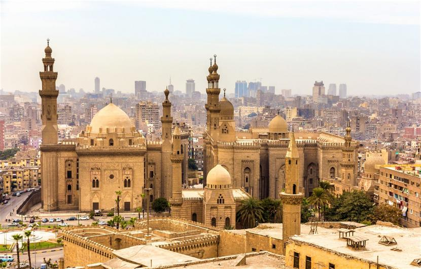
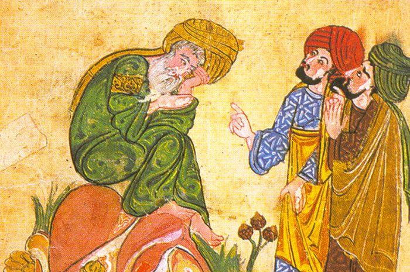

Sejarah Masuknya Islam ke Mesir
Perjalanan Transformasi dari Penaklukan Militer Abad ke-7 hingga Pusat Peradaban Islam Modern
Gambaran Umum Sejarah Islam di Mesir
Islam masuk ke Mesir melalui penaklukan militer pada abad ke-7 Masehi. Momen ini bukan hanya pergantian penguasa, tetapi merupakan titik awal dari transformasi sosial, budaya, dan agama yang mendalam, menjadikan Mesir sebagai salah satu pusat peradaban Islam hingga hari ini.

Sebelum kedatangan Islam, Mesir merupakan provinsi Kekaisaran Bizantium (Romawi Timur) dengan mayoritas penduduk menganut Kristen Koptik. Penaklukan oleh pasukan Muslim di bawah pimpinan 'Amr bin al-'Ash antara tahun 639-642 M mengakhiri kekuasaan Romawi yang telah berlangsung sekitar 670 tahun di wilayah tersebut.

Proses Islamisasi dan Arabisasi berjalan bertahap selama berabad-abad melalui interaksi sosial, ekonomi, dan politik, bukan semata-mata melalui pemaksaan. Hal ini menjadikan Mesir sebagai contoh unik bagaimana Islam berintegrasi dengan budaya lokal yang telah mapan.
Penaklukan Militer Awal (639-642 M)
Penaklukan Islam atas Mesir dipimpin oleh 'Amr bin al-'Ash, seorang jenderal yang cerdas dan diplomatis. Ekspedisi ini mendapat izin dari Khalifah 'Umar bin Khattab dengan tujuan strategis memperluas wilayah Islam dan mengamankan perbatasan.
Ekspedisi Dimulai
'Amr bin al-'Ash memimpin sekitar 4,000 pasukan dari Palestina menuju perbatasan Mesir. Pasukan ini relatif kecil dibandingkan dengan pertahanan Bizantium di Mesir namun memiliki motivasi dan strategi yang unggul.
Pengepungan Pelusium
Kota Pelusium, gerbang timur Mesir, berhasil direbut setelah pengepungan sekitar dua bulan. Kemenangan ini membuka jalan menuju jantung Mesir dan menunjukkan keunggulan taktik militer pasukan Muslim.
Pertempuran Belbeis
Kota Belbeis berhasil direbut setelah sekitar satu bulan pengepungan. Di sini, pasukan Muslim mendapat dukungan dari beberapa suku lokal yang tidak puas dengan pemerintahan Bizantium.
Pengepungan Benteng Babilon
Benteng pertahanan Romawi yang sangat kuat di tepi Sungai Nil ini akhirnya jatuh setelah pengepungan panjang hampir setahun. Jatuhnya benteng ini menjadi titik balik penting dalam penaklukan.
Penyerahan Alexandria
Penaklukan kota penting dan ibu kota Bizantium di Mesir ini secara resmi mengakhiri kekuasaan Romawi di Mesir. Perjanjian damai ditandatangani, menjamin keamanan penduduk dan hak beragama mereka.
Ringkasan Kronologi Penaklukan
| Peristiwa | Tahun | Keterangan Penting |
|---|---|---|
| Ekspedisi Dimulai | Desember 639 M | 'Amr bin al-'Ash memimpin 4,000 pasukan dari Palestina ke Mesir atas izin Khalifah 'Umar bin Khattab. |
| Pengepungan Pelusium | Awal 640 M | Pasukan mengepung dan merebut kota Pelusium, gerbang timur Mesir, setelah pengepungan sekitar dua bulan. |
| Pertempuran Belbeis | Maret 640 M | Kota Belbeis direbut setelah sekitar satu bulan pengepungan dengan dukungan lokal. |
| Pengepungan Benteng Babilon | Mei 640 - April 641 M | Benteng pertahanan Romawi yang sangat kuat di tepi Sungai Nil ini akhirnya jatuh setelah pengepungan panjang hampir setahun. |
| Penyerahan Alexandria | September 642 M | Penaklukan kota penting ini secara resmi mengakhiri kekuasaan Romawi di Mesir yang telah berlangsung sekitar 670 tahun. |
Perkembangan & Masa Keemasan Dinasti Islam
Setelah fase penaklukan dan konsolidasi, Mesir berkembang di bawah berbagai dinasti Islam yang membawa kemajuan di bidang pemerintahan, ilmu pengetahuan, seni, dan arsitektur.
Dinasti-Dinasti Penting dalam Sejarah Islam Mesir
Mesir menjadi provinsi dalam kekhalifahan besar dengan ibu kota di Damaskus (Umayyah) dan Baghdad (Abbasiyah). Pada periode ini, proses Arabisasi dan Islamisasi berjalan intensif melalui kebijakan administratif dan interaksi sosial.
Dinasti Syiah Ismailiyah ini mengubah wajah Mesir secara dramatis. Mereka mendirikan kota Kairo (Al-Qahirah) sebagai ibu kota baru dan pusat kekhalifahan tandingan Baghdad. Mendirikan Universitas Al-Azhar (970 M) yang menjadi pusat pembelajaran Islam terkemuka di dunia.
Dipimpin oleh Salahuddin Al-Ayyubi (Saladin), dinasti ini mengembalikan Mesir ke pangkuan Sunni dan berjasa besar dalam menghadapi Perang Salib. Masa pemerintahan Ayyubiyah menandai kebangkitan militer dan intelektual Mesir.
Masa kejayaan seni, arsitektur, dan perdagangan Mesir Islam. Banyak madrasah, masjid, dan bangunan publik megah yang dibangun, menjadikan Kairo sebagai kota metropolitan utama dunia Islam. Mamluk juga berhasil menghentikan ekspansi Mongol.
Tokoh-Tokoh Penting dalam Sejarah Islam Mesir
Mesir melahirkan banyak tokoh penting yang berperan dalam perkembangan Islam, baik pada masa keemasan maupun era modern.
Tokoh Masa Keemasan Islam di Mesir
Jenderal Muslim yang memimpin penaklukan Mesir dari Bizantium. Setelah penaklukan, ia menjadi gubernur pertama Mesir Islam dan mendirikan kota Fustat, cikal bakal Kairo modern. Kebijakannya yang toleran terhadap penduduk Koptik membantu stabilisasi pemerintahan awal.
Pendiri Dinasti Ayyubiyah yang mengembalikan Mesir ke Sunni dan mendirikan banyak madrasah. Terkenal dalam Perang Salib, merebut Yerusalem dari Tentara Salib (1187), dan dikenal sebagai pemimpin yang adil serta toleran terhadap semua agama.
Sejarawan Mesir terkemuka pada masa Mamluk, dikenal dengan karya monumentalnya "Al-Mawa'iz wa al-I'tibar bi-Dhikr al-Khitat wa al-Athar" (Perumpamaan dan Pelajaran dari Kenangan Rencana Kota dan Peninggalan), sumber utama sejarah topografi Kairo abad pertengahan.
Dokter Muslim terkemuka yang pertama kali mendeskripsikan sirkulasi paru-paru (sirkulasi pulmoner) dalam karyanya "Syarkh Tasyrih al-Qanun". Penemuannya ini mendahului penemuan serupa di Eropa selama berabad-abad.
Astronom terkenal pada masa Fatimiyah, menciptakan tabel astronomi (zij) yang sangat akurat yang digunakan selama berabad-abad. Kontribusinya dalam trigonometri dan astronomi sangat berpengaruh di dunia Islam dan Eropa.
Khalifah Fatimiyah yang kontroversial namun berpengaruh. Mendirikan Dar al-Hikmah (Rumah Kebijaksanaan) sebagai pusat pembelajaran, meskipun kebijakan keagamaannya yang keras menimbulkan kontroversi. Kehilangannya yang misterius menjadi legenda.
Tokoh Pembaharu Modern (Abad 19-20)
Dianggap "Bapak Mesir Modern". Melakukan modernisasi besar-besaran di bidang militer, pendidikan (mendirikan kementerian pendidikan pertama, sekolah teknik, kedokteran), ekonomi, dan administrasi. Kebijakannya membentuk fondasi Mesir modern.
Cendekiawan yang menjadi perintis gerakan penerjemahan dan penyebaran pemikiran Barat di Mesir. Menekankan pentingnya pendidikan modern, nasionalisme Mesir, dan musyawarah dalam pemerintahan.
Murid al-Afghani dan Mufti Agung Mesir. Mengkampanyekan pembaruan pemikiran Islam, menentang taqlid (ikut-ikut buta), dan mendorong ijtihad (penalaran independen) agar Islam relevan dengan modernitas.
Peninggalan Bersejarah Islam di Mesir
Warisan Islam di Mesir mencakup bangunan fisik, institusi pendidikan, dan sistem pemikiran yang tetap relevan hingga saat ini.
Al-Azhar
Masjid dan universitas tertua di dunia yang masih beroperasi, didirikan oleh Dinasti Fatimiyah pada tahun 970 M. Awalnya sebagai pusat pembelajaran Syiah Ismailiyah, kemudian menjadi benteng Sunni dan pusat keilmuan Islam terkemuka di dunia. Hingga kini, Al-Azhar tetap menjadi otoritas keagamaan terpenting dalam Islam Sunni.
Masjid 'Amr bin al-'Ash
Masjid pertama di Mesir dan seluruh Afrika, dibangun pada tahun 641-642 M di lokasi bekas tenda panglima penakluk. Meski telah direnovasi berkali-kali, masjid ini tetap menjadi simbol permulaan era Islam di Mesir dan situs sejarah penting bagi umat Islam.
Kota Kairo Tua (Islamic Cairo)
Kawasan yang dipenuhi dengan masjid, madrasah, permukiman, dan pasar (seperti Khan el-Khalili) dari era Fatimiyah, Ayyubiyah, dan Mamluk. Merupakan salah satu kota Islam abad pertengahan terbaik yang masih terpelihara, ditetapkan sebagai Situs Warisan Dunia UNESCO pada tahun 1979.
Benteng Kairo (Citadel of Cairo)
Dibangun oleh Salahuddin Al-Ayyubi pada abad ke-12 sebagai benteng pertahanan terhadap Tentara Salib. Menjadi pusat pemerintahan Mesir selama hampir 700 tahun. Di dalamnya terdapat Masjid Muhammad Ali yang ikonik dengan kubahnya yang besar.
Sistem Irigasi & Pertanian
Warisan pengetahuan teknik irigasi yang dikembangkan selama periode Islam, termasuk pengelolaan Sungai Nil yang lebih sistematis. Sistem ini mendukung pertanian Mesir selama berabad-abad dan menjadi dasar ekonomi negara.
Sistem Pendidikan Islam
Warisan sistem pendidikan yang dikembangkan di madrasah-madrasah Mesir, dengan kurikulum yang menggabungkan ilmu agama dan ilmu umum. Model pendidikan ini memengaruhi sistem pendidikan di banyak negara Muslim.
Kesimpulan
Sejarah Islam di Mesir adalah kisah dinamis yang dimulai dari penaklukan militer yang cepat, diikuti oleh proses transformasi budaya dan agama yang berlangsung selama berabad-abad. Proses ini melahirkan peradaban Islam yang gemilang, bertahan melalui tantangan zaman, dan terus berevolusi hingga menjadi Mesir modern yang kita kenal sekarang.
Transformasi tersebut tidak terjadi secara instan tetapi melalui proses panjang asimilasi budaya, perkembangan kelembagaan, dan adaptasi dengan perubahan zaman. Dari pusat kekuasaan Umayyah dan Abbasiyah, melalui keemasan Fatimiyah dan Mamluk, hingga kebangkitan modern di bawah Muhammad Ali dan para pembaharu, Mesir tetap mempertahankan posisinya sebagai jantung peradaban Islam.